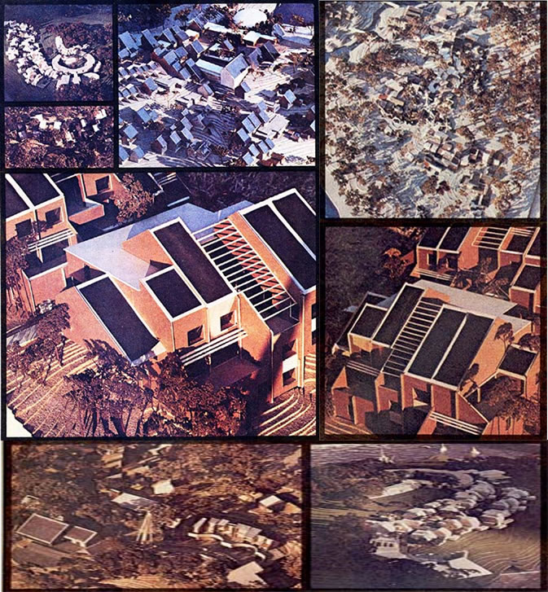

"Design us a self-sufficient, low-energy-consumption, minimum impact, pedestrian community," we told one of Professor George Ramsey's classes at the Georgia Institute of Technology. "A self contained village of solar-heated houses, wind plants, completely recycled wastes and like that. Define all your systems well enough so you'll know that they'll work but, since we don't yet have a definite site picked out for the center, keep everything loose enough so that it'll fit the piece of property on which we do finally build."
Well that was a big (and an impossible) prescription to fill, of course but George's students did themselves proud. After many hundreds of hours and large investments of their own money, they came up with bushel baskets of valuable Research Center concepts and scale models of eight separate and distinct planned communities. The color photos on these pages can do little more than hint at the ideas, the work, and the craftsmanship that went into those eight models.
As you may have suspected, Professor Ramsey already has another class slaving away on designs for individual components (solar panels, sprouting buildings, waste digesters and methane production units, etc.) that can be integrated into the overall plan for an eco-community. Which means that, although there's still a lot of unanswered questions to answer, we are making progress on the eco-village project.
And now that your appetite's whetted we'll try to bring you completely up to date on MOTHER'S Ecological Research Center and Planned Community in the very next issue of this magazine. In the meantime, if you have any thoughts to contribute on the subject, write to Wayne Martin, MOTHER'S Eco-Village Planning Coordinator, P.O. Box 552, Flat Rock, North Carolina 28731.
|
 |
|
|